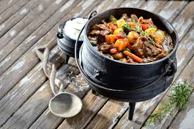

Beef Potjiekos

Description
A slow-cooked beef stew made in a cast iron pot and event to celebrate.
Ingredients
- Butter x 1 tablespoon
- Sunflower oil x 4 tablespoons
- Minced garlic cloves x 2-3
- Chopped beef x 1kg
- Onions x 3
- Celery x 1 cup
- Diced bacon x 1 pack
- Ground thyme x 1 teaspoon
- Ground corrainder x 1 teaspoon
- Ground cumin x 1 teaspoon
- Chopped butternut x 3 cups
- Halved baby potatoes x 10
- Halved carrots x 2
- Large baby marrows x 2
- Tomato paste x 2 tablespoons
- Red wine x 2/3 cups
- Beef stock x 1 cup
- Passata x 1 cup
- Salt/Pepper to taste
Steps
- Sprinkle the flour over the meat and mix to make sure it is well covered.
- Over hot coals, place the potjie pot (I used a size 2 potjie pot which served 5 of us easily plus leftovers) and add the oil and butter. Allow it to heat up until almost bubbling. Add the meat in 2 or 3 batches and brown it on all sides. Remove meat from the potjie and set aside.
- Add the onion, celery, garlic, bacon, coriander, cumin and thyme and allow to cook and soften for 3-4 minutes.
- Remove some coals now to reduce the heat to a very gentle simmer.
- Add the meat back to the pot, add the potatoes, carrots, baby marrows and butternut (or whatever vegetables you have chosen). No need to stir.
- Mix the tomato paste, red wine, beef stock and passata together in a jug and then add to the pot. Again, no need to stir through once the liquid is in the potjie pot.
- Grind a generous amount of salt and black pepper into the pot.
- Place the lid on and sit back and relax!
- Allow to simmer for 3 hours or longer, up to 4 or 5 hours.
- Check the potjie every 40 minutes or so to make sure it is not too hot - you want a gentle simmer and not a ferocious boil!
- You may want to stir the potjie after an hour or two to make sure the meat is not stuck to the bottom. Generally speaking, you want to avoid over-stirring.
- If you have too much liquid towards the end, just take the lid off and allow some liquid to burn off.
- Serve with rice (or other carbohydrates).
Main Menu